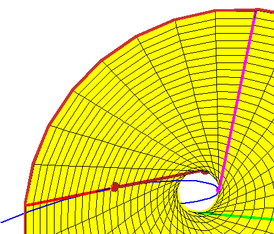

|  |
This animation illustrates the conjecture of Boris Shapiro and Michael
Shapiro, in the case of the classical problem of the two lines meeting
four lines in space.
In this case, their conjecture states that, if we have four lines tangent to the rational normal curve (in blue) at real points, then there are exactly two lines meeting them, and both lines are real. Indeed, given three such lines (shown in red, green, and magenta), there is a unique doubly-ruled quadric through these three lines (here a yellow hyperboloid of one sheet). One ruling contains the three lines, and the other consists of the lines meeting the three. The animation shows a tangent line whose point of tangency moves. As you can see, every such tangent line meets the hyperboloid in two points, each corresponding to a real line meeting the first three tangent lines. |